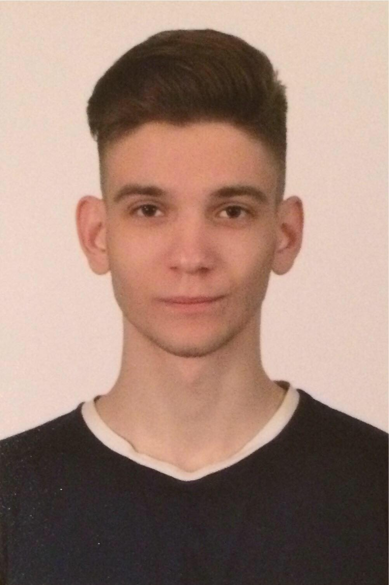

|  |
Personal Info:
Name and Surname: Ilya Rochshin
|
Languages:
|
Education History:
|
Period (month, year): March 2010 - October 2015
Position: Dancer in restaurants, Duet dance show, Dance show “Mio-Dio” (group)
Company’s name City/Country: Kazakhstan, Karaganda / Georgia, Tbilisi
Period (month, year): December 2015 – May 2016
Position: Hand Made Products
Company’s name City/Country: Georgia, Tbilisi
Period (month, year): June 2016 - August 2021
Position: Bartender/Waiter/Hookah-Maker/Manager
Company’s name City/Country: Lounge bar “Time out”, Cafe “Corner”, Restaurant/bar “No Bar”, Georgia, Tbilisi